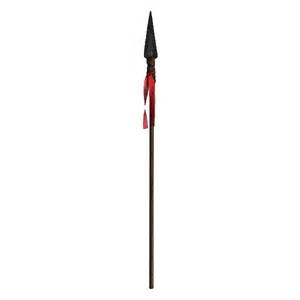

|
|
|
第五章 聖杯城
視界に湖が見えた。うっすらと靄がかかって、遠くまで見通すことはできなかったが、透き通った水が周囲の景色を写しだし、その美しさは神秘的だった。
岸辺に一艘の小舟が浮いていた。小舟には数人の男性が乗っていて、釣りをしていた。そのうちの一人の男性は、白テンの毛皮の上着と紫色の豪華な服を着て、孔雀の羽でできた帽子をかぶり、この森の神秘的な美しさに溶けこんでいた。それは高貴な位の人だけが身につけられる服だったので、その服装からして、この人はこの国の王か城の主であろうと思われた。しかし、その人の顔は灰色のような青さで、いかにも具合が悪そうだった。この森の美しさには、似ても似つかわしくなかった。栄気につつまれた色鮮やかな森の美しさの中に、その人の顔の部分だけが黒い穴になっているような印象だった。これほどに具合が悪いのなら、なぜ釣りをしているのだろうか。パルシファルは、そう思いながら声をかけた。
「ここらに一晩泊まれる場所はありますか。」
高貴な服を着て、病んだ顔をした男の人が答えた。
「このあたり五十キロメートル以内には、この先にある城をのぞいて、建物はどこにもない。あの岩山のはずれを右に曲がりなさい。するとお堀が見える。そこで大きな声で頼んで、跳ね橋を下ろしてもらいなさい。」
パルシファルが去ろうとすると、もう一度後ろから声がかかった。
「道を間違えずに行けたら、今晩は私がおもてなしをいたそう。先に行って、休んでください。どこへ通じているのかわからない道がたくさんあるので、気をつけて行きなさい。」
パルシファルは迷うことなくお堀に着いた。跳ね橋は上っていた。跳ね橋の向こう側に見張り番が立っていて、大きな声でたずねてきた。
「どこから来たのだ。何を探しているのだ。」
「湖にいた釣り人に教えてもらってやってきたのです。こちらに泊めていただけると聞きました。」
「ようこそいらっしゃいました。あの釣り人が約束されたのでしたら、どうぞお入りください。」
跳ね橋が下ろされ、パルシファルは城に向かった。騎士と小姓たち数人が前庭までやってきて、こころよく出迎えた。彼らはパルシファルが馬から下りるのを手伝い、城内へ案内した。甲冑を脱がせ、水とタオルを渡し、絹の服に着がえさせた。パルシファルは歓迎された気がした。
これらはすべて、裕福で高貴な主の館では、当然のこととして行われる典型的なおもてなしの作法である。しかし、この城には、何か普通ではないところがあった。笑い声や大きな声をだす者がいなかった。鼻歌を歌う者も口笛を吹く者もいない。若い小姓も年寄りのような重い動きをしていた。騎士も従者も小姓も皆、礼儀正しく振る舞っていたが、笑顔を見せるものはなく、悲しみと不幸に押しつぶされているように見えた。
この城の中で何が起きているのだろうか、とパルシファルは不思議に思った。湖で出会った釣り人の青白く病んだ顔が思い出された。しかし、騎士はむやみに質問をしてはならない、というグルネマンツの教えが頭に残っていた。この人たちに、どんな問題があろうとも、自分には関わりのないことだと思うようにし、何もたずねずにやり過ごした。そのうちに案内役のピエロが現れ、
「国王アンフォルタス様がお待ちだ。」と大きな声で呼んだ。
パルシファルは案内されるままにホールへ入っていった。
それは、かつて見たこともないような堂々としたホールだった。ろうそくの立ったシャンデリアが柔らかな光をはなち、大きな三つの暖炉からは、暖かさとここちよい香りがただよい、壁際にはソファがならんで置かれていて、たくさんの騎士がすわっていた。
一番奥の一段高い所には、本来、国王がすわるべき名誉の玉座があるが、そこには誰もすわっていなかった。その前の一段低い平らな場所には、折りたたみ式の寝椅子が置かれていて、先ほどの釣り人が身体をいたわるようにして、ゆっくりと寝椅子にすわろうとしていた。先ほどの釣り人は国王アンフォルタスだったのだ。ホールは十分に暖まっているのに、アンフォルタスは毛皮のローブを着ていて、寒気を感じている様子だった。アンフォルタスは苦痛に耐えて厳しい顔をしていたが、痛みをこらえるようにして、パルシファルに言った。
「こんな非公式な場所で、すわったまま挨拶することをお許しいただきたい。私はこの城の城主アンフォルタスだ。どうぞ隣にすわってください。そちらにすわらせたら他人扱いをすることになる。」
アンフォルタスは国王としての風格を十分に備えてはいたが、身体が衰弱していて、人の手を借りずにはいられない状態だった。アンフォルタスは、中途半端な格好をして、寝椅子の上に斜めにすわり、患部の痛みに耐えていた。
パルシファルは挨拶をして、アンフォルタスの隣にすわった。
ただでさえ静かだった城内が、さらに静かになり、薄暗くなった。人々からは悲愴感と悲痛な思いが伝わってきた。誰もが下を向いて黙っていた。すると、小姓が一人、槍をもって走りこんできた。キビキビとした動きで、小走りにアンフォルタスの前に来た。小姓はアンフォルタスの毛皮のローブの間から、股間に槍をさしこんだ。アンフォルタスはうめき声をあげたが、すぐに表情がおだやかになった。小姓は槍を抜いた。槍の穂先には、アンフォルタスの体から吹き出た大量の血がついていて、血は柄を伝わって手に流れ、袖にまで達しており、袖は血みどろだった。広い宮殿に人々の泣きさけぶ声が響きわたった。小姓は来た方向とは逆の方向に走りだし、頭上に槍を掲げた。小姓は時計まわりに、四方の壁に沿って走りめぐった。高く掲げられた槍からは血がしたたり落ちていた。小姓はキビキビとした動きで、役目を終えて外へ出ていった。苦痛の時間が終わった。人々は苦しみからいくぶん解放されたが、胸につかえた悲しみは残り、しばらく泣きつづけた。パルシファルには何がおきたのか、さっぱりわからなかった。
人々が再び落ち着きを取りもどすと、美しい乙女たちが十八人、壮麗で高価な衣装をまとって、順番に入ってきた。まず、二人の乙女が象牙でできた食卓用の台座を一基ずつ運び、一つはアンフォルタスの右足の前に、もう一つはパルシファルの左足の前にすえられた。次に四人の乙女が長く大きな石の板を運んできた。緑ザクロ石でできた豪華な食卓板の四隅を四人で持ち、象牙の台座の上に乗せた。これでアンフォルタスとパルシファルの前に、テーブルがすえられた。二人の乙女は小さなろうそくをアンフォルタスの前とパルシファルの前に一つずつ置いた。四人の乙女は太いろうそくをテーブルの向かい側に均等にならべた。続いて二人の乙女が、まことに素晴らしい鋭利なナイフを一本ずつ、王と客人の前にならべ、四人の乙女は銀のナイフやフォークなどをテーブルの上にセットした。
次に現れたのは、先にも増して豪華な衣装をまとった六人の美しい乙女たちだった。六人はガラスの器に入った香油のランプをもっていた。六人の入場とともに、あたりに神秘的な香りがただよいはじめた。その後ろから、その香りに包まれるようにして、この城の女王が現れた。城主アンフォルタスの妹、レパンセ・デ・ショイエは、上質な絹の衣装を着て、豪華な王冠をかぶり、その手には、緑色の絹の布の上に聖杯を乗せていた。それは透明な水晶のように見えたが、それ自体が明るく輝いていた。聖杯は「楽園の理想」とも「現世の理想を超えるもの」とも言われている。女王レパンセ・デ・ショイエは、聖杯を捧げもつことを許された唯一人の女性である。聖杯に仕える女性は、純潔を守り、誠実な世界に住む者でなければならなかった。女王は聖杯をアンフォルタスの前においた。女王と二十四人の美しい乙女は、アンフォルタスとパルシファルから見える位置に、女王を中央にして麗しく一列にならんだ。
食事の準備が整えられると、騎士に給仕をする大勢の小姓が、聖杯に近づいてきて、聖杯の前に白い布を出し、パンを次々に受けとった。パルシファルは目を疑った。信じられないことがおきたのだ。その後も、肉、野菜、スープやワインが受けとられた。聖杯の前に手をさしだして、欲しいものの名を言えば、どんなものでも受けとることができるのだ。聖杯は至福の果実であり、現世の幸福にあふれた天国の賜物なのである。
パルシファルはもてなしの豪華さと不思議さに目を見はっていたが、礼儀を重んじて質問をさしひかえていた。むやみに人にたずねるものではない、というグルネマンツの教えを覚えていたので、この城に滞在している間には、きっと色々なことを教えてもらえるだろうと思い、黙っていたのだ。
ところが、アンフォルタスの意向はそうではなかった。アンフォルタスはたずねてほしかったのだ。質問をしてほしかったのだ。病んだ姿を人前にさらしたのだから、いたわりの言葉や慰めの言葉を望んでいたのだ。聖杯の不思議を思う存分に見せたのだから、自然な感情で反応し、興味を持ってほしかったのだ。だが、パルシファルはグルネマンツの教えに忠実にしたがうあまり、人としての自然な振る舞いをすることができなかった。
その時、小姓がアンフォルタスの前に剣をもってきた。その剣の柄は黄金でできており、鞘には宝石が散りばめられていた。刃は重厚な破壊力と鋭い切れ味をかねそなえており、剣全体から不思議な力を感じさせた。
アンフォルタスは剣を受けとってパルシファルに渡した。
「この剣は、私がまだ身体に傷を負っていなかったころ、戦場で使っていたものです。もし、今日のおもてなしに満足していただけなかったら、これでその償いにしてください。これを名誉ある客人であるあなたにさしあげよう。」
貴重な贈り物をいただいたにもかかわらず、パルシファルは、黙りこくっていた。剣をいただいたことや言われたことの意味が、わからなかったのだ。
アンフォルタスは精一杯、催促の意味を込めて言った。
「きっと役に立つと思います。使っていただけますか。」
ホール全体が静まり返った。
パルシファルも静寂を感じたが、この静寂が何を意味するのか、この空気が何を表現しているのか、まったく理解できなかった。この沈黙が、言葉にはできないメッセージを伝えようとしているサインであることに、パルシファルは気がつかなかった。どうしたらいいのか、皆目わからなかったので、取りあえず剣のお礼を言っておくことにした。
「ありがとうございます。」
食事がすんだので、片づけがはじまった。女王レパンセ・デ・ショイエは香油のランプをもった乙女たちに導かれて、聖杯の前に来た。そして、城主とパルシファルに深々とお辞儀をし、聖杯をうやうやしく手に取り、ホールから出ていった。
アンフォルタスは、まるで何か大切なものを失ったかのように、深いため息をついた。
「ベッドの用意ができていると思う。きっとお疲れだろうから、どうぞ、あちらへ行って休んでください。」
パルシファルは立ちあがり、就寝の挨拶をした。そこに居合わせた騎士たちも立ちあがり、何人かはパルシファルを寝室へ案内した。
パルシファルは疲れていたが、なかなか寝つけなかった。理解しがたい出来事がおきたために混乱し、神経が興奮していたのだ。
寝室で一人になり、今晩おきた出来事を振りかえっていると、この先の未来に恐ろしい苦難が訪れてくるような、奇妙な予感がして不安になった。
眠りにつくと、夢を見た。悪夢だった。剣で刺されたり馬に踏まれたりする脅迫的な夢だった。うなされた自分のうめき声で目が覚めた。全身にびっしょりと汗をかいていた。救われたことは、すでに朝日がさしこんで、部屋の中が明るくなっていたことだった。それで、気分が少し楽になった。朝日が希望を与えてくれ、また新しい一日が始まることを知らせてくれた。
やがて朝食の支度ができたら、誰かが迎えに来てくれるだろう。小姓が甲冑を運んできて、身支度を手伝ってくれるだろう。そう思っていたが、いくら待っても、誰も現れなかった。そのうちに、うつらうつらとして、知らぬまに眠りに落ちてしまった。
再び目が覚めた時には、すでに午前も終わりに近づいている時刻だった。今度はすぐに起きあがった。見ると、じゅうたんの上に甲冑と二振りの剣が、ならべて置いてあった。一振りは自分の剣、もう一振りは昨夜、城主からいただいた剣だった。
「どういう意味なんだろう。武装しろっていうのか。」
不思議に思ったパルシファルは、
「そうか、敵がやってきて、全員が戦いに行ったのだ。」と思った。
「きっと、声をかけてくれたのだろう。気がつかなかっただけだ。城主や女王が戦いで苦しんでいるのなら、助太刀をしなくては。」
パルシファルは、急いで服を着がえて甲冑を着けた。自分の剣と、昨夜いただいた高価な剣を二振りもって、部屋を出た。城の中にご婦人や留守番がいるだろうと思い、あたりを見まわしたが、どこにも人の気配を感じなかった。城の中は鉄のように冷たい静寂につつまれていた。
中庭にはパルシファルの馬がつながれていた。すぐにでも出発できるように鞍が取りつけられており、そばに槍と楯がきれいに立てかけられていた。まるで馬に乗ることを催促しているかのようだった。騎乗する前に、いくつかの部屋のドアを叩いてみたが、誰も出てこなかった。パルシファルはどういうわけか、イライラしてきて、
「クソッ、どういうことなんだ。」とののしった。
急いで馬に乗り、城門の方へ行ってみた。城門の近くには、真新しい馬の蹄の跡が残っていたので、
「やはり、城外へ戦いに行ったのだ。」と思った。そして、すぐに城門をくぐって跳ね橋に向かった。跳ね橋は下りていたので、渡っていくと、身を隠していた小姓が、急に跳ね橋を操作した。跳ね橋の片側が急に跳ね上がり、馬が倒れそうになった。パルシファルはつんのめる馬を制御し、あわてて体制を立てなおした。
振り返ってみると、小姓が立っていた。パルシファルは怒りを込めてどなりつけた。
「何をするんだ。礼儀を知らないのか。なぜ最後まで渡らせないのだ。」
小姓から答えが返ってきた。
「神さまに憎まれて、罰をうけるがいい。間抜けなガチョウめ。食べることしか口の使い方を知らない馬鹿者よ。たずねることをたずねないで、城主様に恩をあだで返すのか。よほど偉大な栄光がお嫌いなんだな。呪われるがいいさ。」
パルシファルは衝撃を受けた。昨日までは、まことに礼儀正しかった人たちが、ひどい悪態をついている。一体何が起きたのか、まったくわからなかった。状況を理解するためには説明が必要だった。
「どういう意味なんだ。教えてくれ。何をたずねろと言うのだ。」
しかし、この問いには、何の答えも返ってこなかった。小姓は城門の中に消え、門をかたく閉めてしまった。
パルシファルは、地面に残された馬の蹄の跡を追いかけながら、考えた。
「きっと城の人たちは戦いに出かけたのだろう。困っている人を助けてこそ騎士というものだ。そうしてこそ、昨夜のおもてなしと、いただいた剣に対するお礼ができるというものだ。」
彼にはまだ、現実を正しく受け止める態度や、真実を見通す能力は育っていなかったのだ。
パルシファルは蹄の跡を追いかけて、しばらく馬を走らせたが、蹄の跡は、次第にまばらになり、やがてすっかり消えてしまった。

☆ ☆ ☆ ☆
パルシファルは山を越え、道の片側が崖になっている小道にやってきた。人の気配はなかった。しかし、曲がり角を曲がると、女の痛ましい声が聞こえた。目の前の菩提樹の枝に、乙女が腰をかけ、香油をぬった騎士の死体を抱いていた。それはジグーネだったが、彼女があまりにも変わりはてていたので、パルシファルには、それがわからなかった。ジグーネは悲しみにくれて泣いていた。パルシファルは声をかけた。
「ご婦人の心の痛みを察します。何かお手伝いできることがありましたら、どうぞ、おっしゃってください。喜んでお手伝いいたします。」
ジグーネは言った。
「ありがとうございます。ところで、あなたはどこから来たのですか。」
「ここから二キロメートルほどにあるお城から来ました。あんなに豪華なお城は見たことがありません。」
「この大きな森には、ムンサルヴェーシュというお城が一つあるだけです。ムンサルヴェーシュの城は、自分から探そうとする者には、見つからないのです。聖杯によって定められた者だけが、見つけることができるのです。お城には、アンフォルタスという城主が住んでいますが、彼は神の怒りを買って、病に苦しんでいます。
騎士殿、もしあなたがムンサルヴェーシュのお城へ行ったのでしたら、きっとアンフォルタス様にお会いになり、苦しみを救ってあげられたことでしょう。」
「あそこでは、たいへん不思議なものを見ました。」
今、ジグーネはその声を聞いて、相手が誰だかわかった。
「あなたはパルシファルですね。
ムンサルヴェーシュの城に行ったのですね。救済の城に行ったのですね。聖杯を見たのなら、あなたは恵まれた人です。アンフォルタス様に会われて、お救いになられたのですね。あなたは最高の栄誉を受ける人です。あなたの旅を祝福しましょう。」
「どうして、私だとわかったのですか。」とパルシファルはたずねた。
「いつだったか、あなたの名前を教えてあげたのは私です。ジグーネです。」
パルシファルは、目の前にいる人がジグーネだとは信じられなかった。皮膚は老けこんでしわがより、唇はどす黒く、髪の毛はほとんど抜け落ち、まるで瀕死の病人のようだった。
「あなたは本当にジグーネですか。私の名前を教えてくださった方ですか。あなたの唇は赤かったではないですか。栗色の巻き髪はどこへいってしまったのですか。」
「パルシファルよ、ここで私に会ったことを驚かないでください。私がどんなに変わりはてた姿をしていようとも、私たちが親戚であることを恥じる必要はありません。私はこの死んだ愛人と、死ぬまで一緒にいます。悲しみと苦しみとずっと一緒にいます。今の私を喜ばせてくれるものは、アンフォルタス様が元気になられることだけです。
あなたが脇に差している剣を私は知っています。その剣は一撃では刃こぼれがしません。二撃目には砕けてしまうと言われていますが、その剣は一撃で相手を倒すので、二撃目を振る必要はありません。もし砕けたとしてもラックの泉という泉の水に剣を浸すと元通りの形に戻ります。それには呪文が必要ですが、あなたはお城でそれを教わりましたか。その呪文を知っていれば、幸福になれ、至福の冠をいただき、世界中で最も高貴な栄誉を得られるのです。
あなたはアンフォルタス様に、問いかけましたか。」
パルシファルは隠さずに正直に答えた。
「いや、何も問いかけませんでした。」
「なんて馬鹿なの。病んで傷ついたアンフォルタス様を見たでしょう。憐れみや同情の気持ちはおきなかったのですか。」
「それが礼儀正しい行為だとは思いませんでした。」
「礼儀正しい…。馬鹿者よ。憐れみさえあれば、あなたは最高の栄誉を得ていたのです。不思議な出来事や高貴なレパンセ・デ・ショイエ様を見たでしょう。銀の小刀や血まみれの槍を見たでしょう。神が示された主の恐ろしい不思議を見たのですから、憐れんで主に尋ねるべきだったのです。あなたは狼の毒牙を持っています。あなたは生ける死人です。」
「ジグーネ。そんなに怒らないでください。何か悪いことをしたのなら、償いはいたします。」
「償いはけっこうです。あなたはムンサルヴェーシュで、騎士の最高の栄誉を失ったのです。あなたとは、もう二度と口を利きたくありません。」
パルシファルはジグーネから怒られ、責められて、ようやく事の重大さがうっすらとわかりかけてきた。激しい剣幕を見せるジグーネを見ながら、静かにその場を立ち去った。
パルシファルは馬に歩を進ませながら、ムンサルヴェーシュの城でアンフォルタスに問いかけなかったことを後悔していた。しかし、後悔しても、今となってはどうにもならない。あの時の自分には、できなかったのだから、現実を受け止めて、前に進むしかなかった。
パルシファルは前方に、馬に乗った女性の姿を見た。徐々に近づくにつれて、女性の上半身が露出しているのがわかった。女性は肌着しか着けておらず、その肌着も引き裂かれてボロボロになっていた。えりまわりだけはしっかりしていたが、細く裂けた生地が垂れさがり、垂れさがった生地どうしを胸や腹のあたりで結んでいるだけだった。日焼けした肌の大部分が見えていて、乳房もほとんどむき出しになっていた。
馬も見るからにやせ細った馬で、いつ死んでもおかしくないような弱い馬だったので、全体には、乞食のような印象を与えた。しかし、顔だけは美しかった。少しやつれてはいるものの、唇は真っ赤に咲きほこり、美しく高貴な女性であることを推測させた。
パルシファルは追いついて声をかけた。すると、この女性は声の主が誰だかすぐにわかった。
「あなたには、以前に一度お目にかかっていますわ。そのために私はひどい目に合いましたのよ。あなたは私が眠っているところにいらっしゃいましたわね。そのことで夫が怒り、こんなみじめな格好になっているのです。服はボロボロに破かれて、あなたのせいですよ。それでも、あなたに神からの祝福がありますように、お祈りいたします。」
この女性はオリルスの夫人エシューテだったが、パルシファルは、この女性の惨めな苦しみが自分のせいだとは、わからなかった。
「奥さま、一体誰に対してそんなことを言われるのですか。私は騎士になってこのかた、女性を侮辱したことはありません。」
エシューテは馬上で泣きはじめたので、かわいい乳房が涙でぬれた。エシューテはパルシファルに見られまいとして、自分の腕と手で、胸を隠そうとした。それを見てパルシファルは女性をはずかしめてはいけないと思い、自分のマントをぬいだ。
「奥様、どうかこの毛皮のマントをまとってください。」
「殿、それは嬉しゅうございますが、私たち二人がそろって殺されないためにも、それはできません。私からはなれて、先へ行ってください。」
「奥様、誰が私たちの命を狙うのですか。それが誰であろうと、私は二人のために戦います。命は神が授けられたものですから。」
「私の夫があなたと一戦をまじえようとあなたを探しています。彼は身分高き剛勇の騎士で六人分の強さを持っています。きっとあなたは殺されます。だから、ここから逃げてください。」
「逃げるくらいなら死んだ方がましです。ご主人は一人ですか。他に誰かいますか。」
「主人は私を連れているだけです。一人だけだからと言って、勝てるとは限りませんよ。」
エシューテはみじめな格好をしていたが、それには負けず、貞節の冠をかぶり、心の芯を強く持ち、誠実と善良さを失うことはなかった。
パルシファルは戦いにそなえて兜の紐をしめた。遠く前方に歩を進める人馬を見つけ、拍車をかけて、すぐに疾駆した。
背後から聞こえてくる蹄の音に気づいたオリルスは、すぐさま馬の向きを変えた。敵の姿を見たオリルスは、槍を構え、パルシファルめがけて疾駆した。二人は激突のために襲歩に移り、次の瞬間、二つの人馬は中央で交錯した。双方の硬い槍の破片が空中にとびちった。二人はすかさず、剣を抜いた。通常、騎士の戦いにおいては、馬上で剣を抜くことはない。剣は地上で抜くものだ。しかし、この時は、あまりに激しい突撃のために槍が折れ、そして迅速な戦闘準備のために剣を抜かざるをえなかった。二人は馬上にいながら再び激突し、剣で打ち合い、火花がとんだ。
馬上で見ていたエシューテは、素晴らしい互角の戦いに感激し、これほどの戦いは、二度と見られないだろうと思った。そう思いながらも、二人が怪我をすることのないように、無事を祈った。
オリルスは自分の妻に暴行した相手を打ちのめしてやろうと、怒りにまかせて戦っていた。妻の肉体を奪い、妻の心を夫である自分から切りはなし、妻の貞節をけがし、自分の名誉を破壊し、自分に恥辱をあたえた男を、剣で突きさして、血祭りにあげようと思っていた。彼はパルシファルを決して許せなかったのだ。
一方、パルシファルはエシューテのために、オリルスの愛を取りもどそうと思っていた。剣は戦いのためではなく、愛の回復のために振られていた。
オリルスは自分の力と技への慢心から、パルシファルの腕をつかんで勝利をたぐりよせようとした。しかし、逆にパルシファルがオリルスの胴体をかかえ、軽々と馬上から引き落とした。そして、力ずくで抑えこんだ。パルシファルはオリルスの上になり、首根っこをつかんだ。
「お前はこの女性にみじめな思いをさせたな。彼女に愛をささげるんだ。さもないと、お前の命はない。」
「強き若者よ、なぜ私は殺されなければならないのだ。」
「このご夫人を、以前のように愛するなら、お前の命を助けてやる。」
「それはできない。この女の罪は許せない。高い栄誉を台無しにして、私を苦しめたのだ。そのかわり、私の命を高い値段で買いとらせてほしい。兄のレヘリーンは二つの国をもっている。どちらかひとつの国をあなたにさしあげよう。しかし、この女との和解だけはできない。他のことなら何でもする。」
パルシファルは毅然として、相手の言い分には、したがわなかった。
「領土があろうと兄弟がいようと、そんなものではお前の命の助けにはならない。いいか。すぐにベルターネの国に行き、アーサー王を訪ねよ。そして私のことが原因で、ある男からたたかれた女性を探し、その方に忠誠の誓いを立てよ。その方に対する私の敬意も伝えよ。加えてその男を処罰してくれるように、アーサー王に伝えてくれ。そうしなければ、この場でお前を打ち殺す。次に、この夫人と心から和解し、以前のように愛してもらいたい。さぁ、私のこの言葉通りにすると誓ってもらおう。」
「命を助けていただけるなら、言われたとおりにしよう。」
パルシファルはオリルスを立たせて、エシューテに対して何か言うように、言葉をうながした。オリルスは、エシューテに向かって言った。
「妻よ。私のキスを受けてくれ。私はお前のために戦って敗北したのだ。お前の過ちで名誉を失ったが、すべて水に流そう。お前は許されたのだ。」
エシューテは、馬からとび下りて、オリルスとキスをした。夫の口は、鼻血で真っ赤にぬれていたが、そんなことは気にせず、愛の回復を確かめようとした。
二人の騎士と夫人は、その場をはなれて馬を進め、とある岸壁の中の庵の前にきた。この庵にはトレフリツェントという隠者が住んでいたが、この時には姿が見えなかった。
パルシファルは庵の中へ入っていき、そこで聖櫃を見つけた。そしてエシューテから奪った指輪を聖櫃の上におき、その上に手を重ねて、誓いの言葉を述べた。
「私は神と騎士の栄誉に誓って、この夫人が潔白であることを証明する。
私がこの夫人から指輪とブローチを奪ったとき、この夫人は何の過ちもおかすことなく、私の攻撃に対して必死の抵抗をしただけだ。
私はあのときは、愚か者で未熟で、何事にも分別がなかった。
この夫人は、私の欲望の矛先を食べ物に向けさせて、危機を回避した。
この夫人は立派な女性であり、夫から愛されるべき貞淑な妻であることを証明する。
さあ、この指輪を受けとって、妻に返してあげなさい。
ブローチは誰かにあげてしまったので、ここにはない。」
パルシファルのこの言葉を聞いて、オリルスは感激した。オリルスはパルシファルから指輪を受けとり、エシューテの指にはめた。そして、口の血をぬぐい、最愛の人に熱烈なキスをした。エシューテはあらわな肌に軍衣をかけてもらった。オリルスは言った。
「若き勇士よ。あなたは強く勇敢なだけではなく、誠実と真摯の彫像だ。あなたは自ら宣言をして、喜びと平安をもたらしてくれた。私はあなたに敗北したものの、それが幸いし、美しい真実を知ることができた。
私は、妻とあなたとの間に、何か愛の関係があったのではないかと疑ったのだ。それで愚かにも、妻に仕打ちをしたのだ。
あなたのおかげで、これまで以上に妻のすばらしさを知ることができた。これからも心から妻を愛することができる。」
オリルスはパルシファルに、自分のテントに招待したいと申し出たが、パルシファルは丁重にことわった。パルシファルはオリルスと夫人に別れをつげた。
オリルスと夫人は二人でテントに戻り、まるで新婚の夫婦のように、愛を確かめ合った。
翌日、オリルスとエシューテは二人でアーサー王のもとへ向かった。そのとき、アーサー王はベルターネの宮廷にはおらず、円卓の騎士とともに旅に出ているという知らせを受けていたので，迷わずそちらの方向へ馬を進めた。広大な平原を越えたところで、川が見えて来た。川岸にはアーサー王と同行する人々のテントが一キロメートル以上にわたって広がっているのが見えた。
オリルスはテントの張ってある敷地内に入っていき、目的の女性の居所をたずねた。
「赤い騎士に微笑んだために、ある男から頬をたたかれた女性を探している。」
すると、人々は親切にその場所を教えてくれた。
「このような訪問はあなたで三人目ですよ。赤い騎士は大したお方ですね。」
「その通りだ。騎士の栄誉に値するお方だ。ところで、その女性の名前はなんと言うのだ。」
「クンネヴァーレ様です。クンネヴァーレ様もずいぶんと引き立てられて、幸せ者でございますね。」
「クンネヴァーレだと…。それはラーラントのクンネヴァーレなのか。」
「そうでございます。」
「それは私の妹だ。なんということだ。仲のいい妹に、忠誠を誓うのか。」
オリルスもエシューテも驚いて顔を見合わせた。
しかし、オリルスの心をわしづかみにした栄光の騎士を思い出すと、妹への忠誠の誓いという、いささか転倒した行為も、些細なことに思われた。オリルスはクンネヴァーレの前に出て，忠誠の誓いを申し出た。すると、クンネヴァーレは言った。
「いままでたくさんお世話になりましたお兄様から忠誠の誓いを受けるわけにはいきません。」
「私は赤い騎士から命令されているのだ。どうか忠誠の誓いを受けてくれ。」
クンネヴァーレは兄オリルスの立場を理解し、忠誠の誓いを受けとり、兄を自由の身にしてあげた。オリルスは言った。
「いったい誰がお前をたたいたのだ。不愉快きわまりないことだ。復讐をするべきときがきたら、思い知らせてやろう。」
オリルスはアーサー王に言った。
「妹が受けた暴力の償いをするように、王にお願いしろと、赤い騎士から命じられて、こちらに参りました。」
アーサー王はオリルスの言葉にうなずいたが、その場では、何も言わずに黙っていた。パルシファルから度重なる伝言を受けとっても、今となっては、取り立ててケイエに何かを言うことはできなかった。そのことが返ってケイエには厳しいものとなった。ケイエの周囲では、常に沈黙が立ちこめ、大勢の人々が、軽蔑の視線を投げることになったのだ。
その晩、オリルス、エシューテ、クンネヴァーレは、アーサー王とともに、にぎやかで楽しい宴を過ごした。
|
|
|